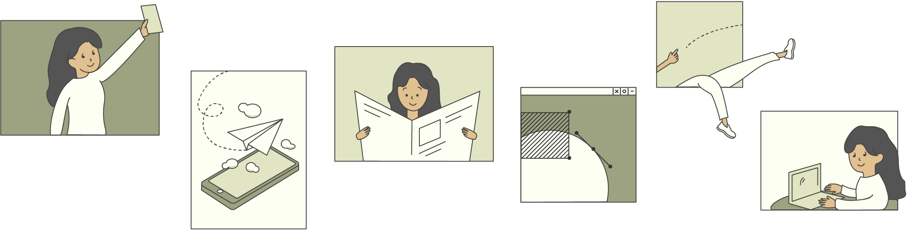

Making a mess, then making it make sense.
It all started with a neon green iPhone 5C - that tiny piece of metal sparked my obsession with how things worked visually, physically, and emotionally.
I studied design and business at the University of Michigan, then took a year in the corporate world to get my hands dirty. Now, I combine that foundation with a master's in UX Research and Design, focusing on how real people move throuhg real systems.
As a designer, I care about designing for clarity, for impact, and for the people who usually get overlooked. And if the experience can spark a laugh or two along the way, even better.
Answers before you even asked — just like a good UX.
Because I've been in rooms where no one had answers and I got comfortable asking the right questions.
I've scoped features that didn't exist yet, run interviews with zero script, and turned vague ideas into prototypes that actually got shipped. I don't need a shiny job title to take ownership. If something's broken, I'll fix it. If something's unclear, I'll make sense of it.
My approach is equal parts thoughtful and scrapper. I care about details, I care about people, and I care about the weird in-between moments that usually get overlooked.
Also, I follow through. Every time.
Ideally, a ghostwriter for the fortune cookie industry.
Realistically, I'd be somewhere between creative strategy and brand storytelling — helping teams figure out what to say, how to say it, and why it matters. Still reading the room. Just with less wireframes.
My heart hopes I'm living in Chicago with my middle school child Maurice (my sourdough starter) and my boyfriend Camden. At this point, I've visited Vietnam with my family and decorate my place with trickets from my travels.
My brain hopes I'm leading somewhere cool, where strategy and soul sit at the same table, and surprising people (and maybe myself) with what good UX can look like. And if all goes well... maybe finally learning how to swim.
Meet the team. I wear a lot of hats around here.
President
Cecilia Huynh
UX Designer
Cecilia Huynh

UX Researcher
Cecilia Huynh

Project Manager
Cecilia Huynh
Intern
Cecilia Huynh
Javascript Helper
Noah Bui